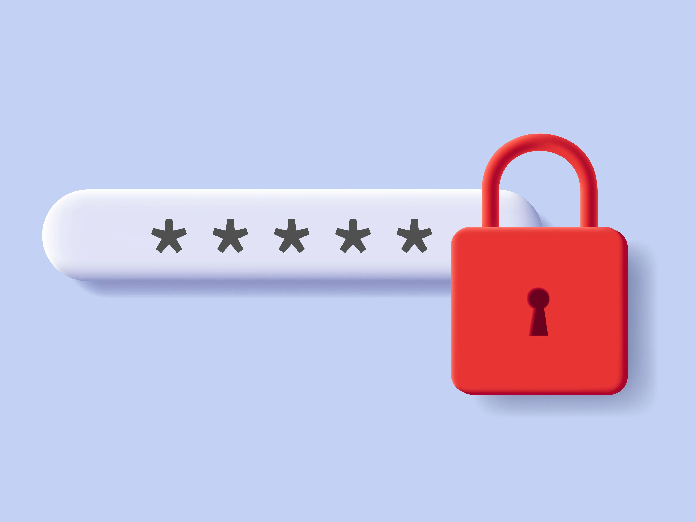

Why do we need strong passwords?
While our society gets more digital, it will become increasingly important to protect
the various online accounts from social media to banking. Having a strong password ensures
that these accounts remain secure. Most people use a very simple password, and they use the same password
across all accounts. We will discuss why this is a terrible idea.
Tradeoffs, Easy to remember vs Secure
When coming up with a password there are some tradeoffs that have to be made. Password creating tradeoffs are
on a sliding scale between being easy to remember or more secure. Increasing one of these inherently means the
other will be lower. For example, a password like "Water123" is very easy to remember, but is not very secure.
On the other hand, a password like "ë;jDjq3W-´7êÖg0´1äKP" would be nearly impossible to remember, but is
extremely secure. Find this balance is important, but some general recommendations is to lean on the side
of secure for more important accounts like banking.

Password strength, Entropy
You might be wondering, how can I tell if my password is strong? That is where the concept of entropy comes
in. The entropy of a password is a value that refers to how predictable it is to guess a password. It is based
the length of the password, and the different types of characters that make up the password. Longer passwords
will have a higher entropy, and passwords that contain different types of characters like uppercase, lowercase,
numbers, special characters, etc, will have a high entropy. Having a high entropy level is the goal when creating
a password. This is to ensure protect from password crackers. An entropy level of at least over 60 bits is good
for withstanding brute force password cracking algorithms.
